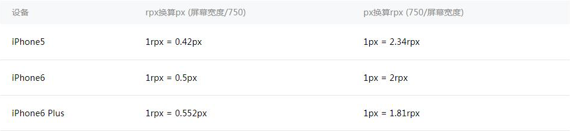

在WXSS中，引入了rpx（responsive pixel）尺寸单位。引用新尺寸单位的目的是，适配不同宽度的屏幕，开发起来更简单。
如图2-9所示，同一个元素，在不同宽度的屏幕下，如果使用px为尺寸单位，有可能造成页面留白过多。
图2-9 使用px尺寸单位，iPhone5与iPad视觉对比
修改为rpx尺寸单位，效果如图2-10所示。
imrdr:
1 个 px = 2 个物理像素
1 个 rpx = 目标机型的屏幕宽度px / 750个物理像素
图2-10 使用rpx尺寸单位， iPhone5与iPad视觉对比
小程序编译后，rpx会做一次px换算。换算是以375个物理像素为基准，也就是在一个宽度为375物理像素的屏幕下，1rpx = 1px。
举个例子：iPhone6屏幕宽度为375px，共750个物理像素，那么1rpx = 375 / 750 px = 0.5px。

图2-11 常用机型rpx尺寸换算表